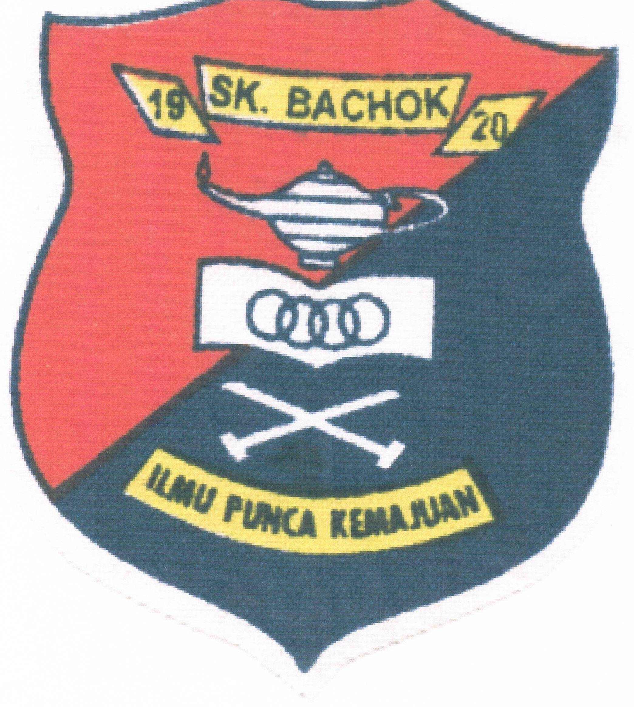
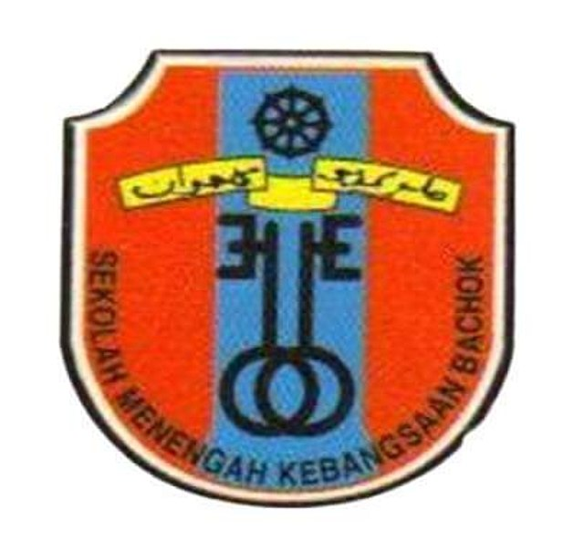

Sk Bachok(2011-2016)
- Winning competitions or participating in music, art, or dance contests.
- Acting in school plays or musicals and receiving recognition.
- Winning medals or trophies in sports like football, netball, badminton, athletics, etc.
- Being an active member of clubs like the science club, debate team, or eco-friendly club.

SMK bachok (2017-2021)
- Being appointed as a prefect, head prefect, class monitor, or leader of clubs and societies.
- Contributing to community service initiatives organized by the school or other organizations.
- Being recognized as a top student in specific subjects like mathematics, science, or literature.
- Participation in musical bands, orchestras, or drama productions, and receiving accolades for performances.
- Recognition for excellence in art, drama, or creative writing competitions

Universiti Teknologi MARA, Machang branch. (2022-2025)
- Serving as president, treasurer, or other key positions in student clubs or organizations.
- Organizing or leading major events, workshops, or conferences.
- Consistently achieving top grades.
- Completing a noteworthy final-year project, dissertation, or thesis.